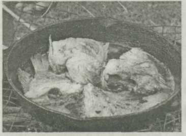

1,3 кг судака, 75 г сливочного масла, 100 г репчатого лука, 400 г рыбного бульона, 1 кг сладкого перца, 50 г белого сухого вина, 500 г картофеля, соль, перец, зелень петрушки и укропа — по вкусу.
Судака разделать на филе (без кожи и костей), нарезать ломтиками, посолить, посыпать перцем и тушить с добавлением сливочного масла, мелко нарезанного лука и зелени петрушки и укропа. Затем, добавив белое вино и рыбный бульон, довести до готовности. Подавая на стол, рыбу полить соком, в котором она тушилась.
Сладкий перец испечь в духовке, очистить от кожицы и семян, нарезать соломкой, посолить и припустить со сливочным маслом. Подать на гарнир вместе с целым отварным картофелем.
Ирина ДАНИЛОВА, г.Оренбург.
Горбуша в тестеПриготовить жидкое, как для оладий тесто, но не на молоке, а на пиве: пиво смешать со взбитым яичным желтком, всыпать просеянную муку, соль, взбить все вместе, добавить отдельно взбитый белок и осторожно перемешать.
Горбушу нарезать ломтиками, слегка посолить. Наколоть каждый ломтик рыбы вилкой, обмакнуть в тесто и обжарить в горячем растительном масле. Подавать можно как в горячем, так и в холодном виде.
Евгения ЛОГУНОВА, г.Мурманск.
Плакия из рыбы1,2 кг судака или карпа, 200 г свежих помидоров, 100 г репчатого лука, 150 г сливочного масла, 30 г корня сельдерея, зубок чеснока, 1 ст.л. муки, 1 лимон, соль, зелень петрушки, черный перец, лавровый лист — по вкусу.
Рыбу разделать, оставив куски с кожей и реберными костями, нарезать на порции и уложить на смазанный маслом противень. Отдельно спассеровать в масле измельченные лук и корень сельдерея, довести до мягкости. Затем прибавить мучную пассеровку, разведенную 1 ст. горячей воды, соль, измельченный чеснок, черный перец, лавровый лист, довести до кипения и этим соусом залить уложенную на противне рыбу. Сверху на рыбу положить ломтики помидоров и лимона, посыпать нарезанной петрушкой, запечь в духовке.
Диана УЛЬЧЕНКО, гЛуганск.
Камбала по-болгарски900 г камбалы, 1 ст.л. муки, 4 ст.л. растительного масла, соль, зелень петрушки, лимонный сок -по вкусу, пол-лимона, 750 г отварного картофеля, 100 г черствого белого хлеба, жир для жаренья.
Рыбу обработать, нарезать на порции, посолить, запанировать в муке и обжарить в жире до образования румяной корочки. Затем довести до готовности в духовке. При подаче на стол рыбу посыпать мелко нарезанной зеленью петрушки, сбрызнуть лимонным соком, полить разогретым растительным маслом и посыпать хлебными крошками. На гарнир подать отварной картофель, ломтики лимона.
Светлана ФОМИЧЕВА, г. Береза.
Карп с квашеной капустой1,2 кг карпа, 800 г квашеной капусты, 1,5 ст.л. муки, 100 г томат-пюре, 50 г сливочного масла, 100 г репчатого лука, 0,5 ст. воды или бульона, черный молотый перец, соль — по вкусу.
Очищенного и промытого карпа разделать на куски с кожей и реберными костями, нарезать на порции, посолить, посыпать черным перцем, запанировать в муке и обжарить в масле до румяной корочки. Отдельно спассеровать лук и томат-пюре, добавить нашинкованную капусту, посолить, прибавить воду или бульон и тушить до мягкости. Затем капусту переложить на противень, а сверху положить куски рыбы и запечъ в духовке.
Раиса МАТАЕВА, с.Дружба Саратовской обл.
Тушеный карп1 кг карпа, 100 г репчатого лука, 1 ст. томатного сока, 750 г жареного картофеля, 150 г белого вина, 50 г сливочного масла, 200 г свежих помидоров, зелень, соль — по вкусу.
Нарезанный лук залить водой, довести до кипения, откинуть на сито, охладить и положить в кастрюлю, затем прибавить сливочное масло, томатный сок, очищенные и мелко нарезанные помидоры, влить белое вино и посолить. Очищенного и нарезанного кусками посоленного карпа положить на лук и помидоры, накрыть крышкой и тушить в духовке 30 мин., затем вынуть, а лук и помидоры протереть через сито. На гарнир подать жареный картофель и посыпать зеленью.
Ольга ВЕЛИЧКО, г.Ставрополь.
•Подавая на стол крупную рыбу, сваренную в кастрюле, надо класть ее на блюдо позвоночной костью вверх, осторожно прижимая и тем самым расширяя брюшную часть — позвоночная кость остается посередине, благодаря чему легко брать мякоть с обеих сторон.
• Для варки пригодны все породы рыб, однако сельдь, карась, омуль, чехонь, навага и корюшка в вареном виде менее вкусны, чем в жареном.
• При отваривании трески, камбалы, сома и щуки, чтобы нейтрализовать их специфический запах, рекомендуют, кроме кореньев и лука, прибавить еще на каждый литр воды 100 г огуречного рассола.
Щука, тушенная с красным вином1,2 кг щуки, 50 г сливочного масла, 50 г красного вина, 0,5 л рыбного бульона, 1 морковь, 30 г корня сельдерея, 750 г картофеля, пучок зелени, соль — по вкусу.
Очищенную щуку разделать на филе с кожей и реберными костями, нарезать на порции и припустить с добавлением красного вина, нарезанного кольцами лука, измельченных моркови, сельдерея, зелени, соли, сливочного масла и рыбного бульона. При подаче на стол рыбу положить на блюдо, уложить гарнир из картофельного пюре и полить соусом, в котором припускали рыбу.
Галина РОМАНОВА, г. Темрюк.
Рыба в тесте1 кг мелкой рыбы (мойва, салака) почистить, промыть, посолить. Из 1 ст. пива и 3 ст.л. муки приготовить жидкое тесто. Каждую рыбку обмакнуть в тесто и обжарить в растительном масле.
Тамара ОБЖОРИНА, п/о Чаадаеве Владимирской обл.
Карп фаршированный1 кг карпа, 200 г растительного масла, 100 г репчатого лука, пучок зелени петрушки, 300 г муки, 200 г грецких орехов, перец, соль — по вкусу.
Очищенного от чешуи и промытого карпа разрезать по спине, вынуть позвоночные кости, через это отверстие выпотрошить, промыть и нафаршировать. Фарш приготовить из пассерованного в растительном масле измельченного лука, зелени петрушки, толченых грецких орехов. Заправить фарш черным перцем и солью. Фаршированную рыбу зашить и завернуть в раскатанный лист крутого теста, приготовленного из муки, растительного масла, соли и воды. Поставить запекаться в нагретую духовку.
Галина СТУКАНОВА, г.Самара.
Рыба в пергаменте0,5 кг рыбного филе, 1 луковица, 1 морковь, 2 ст. л.сливочного масла, 1 ст.л. лимонного сока (или щепотка лимонной кислоты), перец, соль — по вкусу, зелень.
Кусочки рыбного филе замочить на 5 мин. в соленой воде. Вынув, дать воде стечь, положить на смазанную маслом пергаментную бумагу, сверху — слой масла с перцем, на него — слой натертой на крупной терке моркови с измельченным луком. Все это сбрызнуть лимонным соком и посыпать зеленью. Пергаментные пакетики обвязать ниткой или шпагатом и опустить в кастрюлю с кипящей водой на 15 мин.
Зинаида ТИМОШЕНКО, г. Шахты Ростовской обл.
Тушеный хек с хреном1 кг рыбы, 150 г хрена, 100 г сметаны, жир, соль — по вкусу.
Рыбу нарезать ломтиками, сложить послойно в кастрюлю, смазанную жиром, каждый слой посолить, пересыпать тертым хреном, полить сверху сметаной, тушить 40 мин.
Татьяна ДОМАННИКОВА, г.Гомель.
Карп, запеченный с грибами1 кг карпа, 200 г свежих или консервированных белых грибов, 70 г сливочного масла, 2 луковицы, 1,5 ст. сметаны, 1 ст.л.муки, 100г тертого твердого сыра, 2 ст. л. панировочных сухарей, соль — по вкусу.
Карпа очистить от чешуи и внутренностей. Положить на смазанное маслом металлическое блюдо и запечь в духовке, но не до полной готовности. Грибы очистить, хорошо промыть, нарезать довольно крупными ломтиками, положить в кастрюлю, добавить измельченный лук, соль, перец, 1 /4 ст. воды и тушить до готовности. Рыбу засыпать грибами,залить подсоленной сметаной, смешанной с мукой, густо посыпать сыром, натертым на крупной терке и смешанным с сухарями. Сбрызнуть растопленным маслом, запечь в духовке до румяной корочки. Подавать горячим на том же блюде.
Раиса ЯРОШЕВИЧ, г. Жодино.

•Рыбу массой до 200 гиспользуют для тепловой кулинарной обработки с головой. После очистки от чешуи у рыбы разрезают брюшко от головы до анального отверстия и удаляют внутренности вместе с жабрами.
• У рыбы массой от 200 г до 1 кгголову отрезают, а тушку используют целой или режут на куски, но чаще готовят непластованной. Для потрошения делают глубокий надрез мякоти у края жаберных крышек, перерубают позвоночную кость и отделяют голову, а вместе с ней вытаскивают и большую часть внутренностей. Их остатки вынимают, не разрезая брюшка. Вырезают плавники. Нарезанные куски имеют округлую форму.
• У рыбы массой более 1 кгпосле очистки от чешуи разрезают брюшко от головы до анального отверстия, отделяют голову вместе с внутренностями, вырезают плавники. Затем выпотрошенную и промытую рыбу пластуют, то есть разрезают по спинке вдоль позвоночника на две части. Если с одной половинки срезать реберные кости, а с другой — реберные кости и позвоночник, то останется филе.
Треска под картофельной шубой600 г трески, 300 г картофеля, 200 г молока, 1 луковица, 1 морковь, 1 яйцо, зелень, сливочное масло, чеснок, маслины, соль, перец — по вкусу.
У рыбы отделить филе от костей, посолить, разрезать на кусочки и залить горячим молоком. Картофель очистить, нарезать тонкими кружочками. В разогретом масле обжарить измельченные лук, морковь и чеснок. Отдельно обжарить картофель. В глубокую сковороду выложить половину картофеля, на него — рыбу и обжаренные овощи, накрыть оставшимся картофелем. Посолить, поперчить, посыпать зеленью и запечь в духовке 20 мин. Украсить дольками вареного яйца, маслинами.
Виктория СЕМЕНЮК, г. Красноярск.
Щука, жаренная в чесночно-сливочном маслеНа большую рыбу — 150 г сливочного масла, 1 головка чеснока, 1 луковица, 20 г зелени, соль — по вкусу.
Щуку вымыть, очистить от чешуи, удалить жабры и внутренности, промыть сверху и внутри, натереть солью. Чеснок пропустить через чесночницу, соединить с размягченным сливочным маслом.
Противень смазать половиной чесночного масла, положить рыбу. Поставить в разогретую до 200 град, духовку. Спустя 15-20 мин. рыбу перевернуть и смазать оставшимся маслом сверху и внутри. Очищенную луковицу нарезать кольцами, разложить по рыбе. Чтобы брюшко сохранило округлости, вовнутрь положить 5-6 целых небольших вареных картофелин. И снова поставить в духовку на 15-20 мин.
Лидия КОСТЕНКО г. Благовещенск.
Запеченная с овощамиЛюбую рыбу средних размеров вымыть, удалить голову, плавники, хвост, разрезать вдоль хребта пополам, натереть солью и перцем и выложить на противень с растительным маслом. Натереть на крупной терке свеклу и морковь, перемешать с пропущенным через чесночницу чесноком, посолить и положить рядом с рыбой, заполняя свободное пространство. Запекать в духовке полчаса.
Нина ТРУСОВА, с. Кавалерово Приморского края.
• При ароматизации тех или иных рыбных блюд пряностями (перец, лавровый лист, коренья) следует учитывать их сильное влияние на вкус блюда. Пряности не должны заглушать естественного приятного запаха рыбного бульона, специфического аромата того или иного вида рыбы (кроме некоторых видов рыб, имеющих недостаточно привлекательный запах). Чрезмерное количество пряностей делает вкус любого рыбного блюда абсолютно одинаковым и совершенно не возбуждающим аппетит.
В ореховой корочке1,5 кг филе минтая, щуки, судака или трески, 1 ст. дробленых орехов, 3 ст.л. майонеза, 2 ст.л. сметаны, 1 зубок чеснока, 2 яйца, соль — по вкусу, панировочные сухари, растительное масло для обжарки.
Филе нарезать кусочками, замариновать в смеси майонеза, сметаны, соли и растертого чеснока. Затем обвалять кусочки в дробленых орехах, обмакнуть во взбитые яйца и запанировать в сухарях. Обжарить в разогретом растительном масле. Подать с зеленым горошком.
Вера МАКСЯШЕВА, г.Самара.
Скумбрия в форме2 скумбрии, 2 ст.л. сливок, 1 ст.л. кефира, 2 ст.л. тертого сыра, 2 ст.л. сухарей, 3-4 зубка чеснока, соль, перец — по вкусу.
Рыбу выпотрошить, промыть. Нарезать кусочками, положить в смазанный маслом сотейник, посолить и посыпать перцем.
Сливки, кефир, мелко нарубленный чеснок смешать, полить этой смесью рыбу, сверху посыпать тертым сыром и сухарями. Поставить в духовку. Через полчаса блюдо готово. Подавать с гарниром.
Галина МИХАНОК, г. Кобрин.
Рыба «под шубой»1 кг рыбы (не костистой), 10 клубней картофеля, 3 большие моркови, 200 г сыра, 1 банка майонеза.
Смазать сковороду растительным маслом и выложить слоями: нарезанный кружками подсоленный картофель, затем — нарезанную и подсоленную рыбу, морковь, нарезанную кружками, лук, нарезанный кольцами и спассерованный в масле 10 мин. Сверху посыпать тертым сыром, залить майонезом. Сковороду поставить в не сильно разогретую духовку на 40-50 мин.
Людмила ПРОКОФИЧЕВА, с. Исаевское Ивановской обл.
Котлеты300 г отварного вымени, 1,5 кг филе скумбрии, 2-3 луковицы, 150 г белого хлеба, 3 яйца, 0,5 ст. молока, чеснок, перец, соль — по вкусу.
Рыбу, вымя, лук, намоченный в воде или молоке хлеб дважды пропустить через мясорубку. Добавить сырые яйца, молоко. Хорошо вымесить фарш, сформовать котлеты, смочив руки водой. Жарить в растительном масле.
Нина АРДЫ, г.Москва.
• Рыбные котлеты рекомендуют готовить с добавлением обжаренного до золотистого цвета мелко нарезанного лука. Тогда они получаются очень нежными и сочными.
• Уха приобретет наваристость и приятный вкус, если добавить в нее при варке немножко муки, дольку лимона и чуть-чуть огуречного рассола.
Рыба в банкеВ подогретую литровую банку уложить слоями 2 нарезанные полукольцами луковицы и 2 натертые моркови, затем — нарезанное на кусочки филе любой рыбы. И вновь — морковный и луковый слои. Добавить по вкусу соль, перец, уксус. Влить 1/4 ст. растительного масла. Накрыть банку стеклянной или металлической крышкой, поставить в кастрюлю с водой (как для стерилизации). После закипания воды варить 20 мин. Подавать горячей, но холодная рыба тоже очень вкусна.
Ирина ЛЕВА, п.Смоляниново Приморского края.
Оладьи из горбуши500 г филе горбуши, 1 -2 яйца, 1 ст. кефира или простокваши, соль, перец — по вкусу, мука, растительное масло для жаренья.
Мелко нарезать филе горбуши, посолить, поперчить. Вбить яйца, влить кефир, хорошо перемешать. Постепенно всыпать муку до получения консистенции теста, как на оладьи.
Обжарить в кипящем масле с двух сторон.
Ольга КРАВЧЕНКО, г.Брянск.
Рыба с начинкойКрупного сазана разрезать по спинке, плавники, хребет, внутренности удалить, чешую не счищать, тушку промыть. С внутренней стороны аккуратно, чтобы не разрезать кожу, сделать косые надсечки и посыпать солью. Через час лишнюю соль стряхнуть, брюшко заполнить кружочками помидоров, яблок и лука, сазана положить на решетку или завернуть в фольгу и разместить над тлеющими углями. Блюдо будет готово через 50 мин.
Любовь МЕДВЕДЕВА, г.Хабаровск.
Праздничная1 кг рыбы, 1 ст. воды, перец, соль, лавровый лист, 60 г сливочного масла, 2 ст.л. муки, 2 ст. молока, немного петрушки (можно сушеной), 2 вареных яйца, 4-5 отварных картофелин, 4 ст.л. тертого сыра, 2 соленых помидора, 1 луковица.
Рыбу отварить вместе со специями, отделить филе от костей, нарезать кусочками. Бульон процедить. В сливочном масле обжарить муку, постепенно влить бульон и молоко. Прокипятить смесь 5 мин. Затем опустить измельченные петрушку и вареные яйца, приправы — по вкусу. В глубокую посуду выложить рыбу, на нее — ломтики вареного картофеля. Залить соусом, посыпать тертым сыром и запечь в горячей духовке. Подавая на стол, украсить дольками помидоров, колечками лука.
Игорь ЗАЙЦЕВ, г.Александровск.
Рыбный пирог за 10 минут1 ст. муки, 250 г майонеза, 1 ст. сметаны, 3 яйца, 0,5 ч.л. соды, погашенной уксусом, соль — по вкусу.
Замесить тесто, вылить половину в сковороду. Положить слоями фарш (кусочки филе свежей рыбы, 1 ст. вареного риса, кольца репчатого лука). Закрыть второй половиной теста. Посыпать тертым сыром и выпекать в духовке до готовности.
Ольга СЕНЬКОВА, г. Чебоксары.
Рыба по-французскиПонадобится филе трески, минтая, зубатки или скумбрии. Рыбу почистить и разрезать вдоль хребта. Затем нарезать на куски. Натереть смесью из равных частей соли, сахара, черного молотого перца (по 1 ст.л. на 1 кг рыбы). Выдержать рыбу 2-3 часа. Взбить 2 сырых яйца с 1 ст. майонеза. Подготовить муку.
Рыбу обвалять в муке, затем обмакнуть в смесь яиц и майонеза и опять обвалять в муке. Жарить в кипящем растительном масле. Обжаренную рыбу посыпать тертым чесноком, сложить в кастрюлю, закрыть крышкой и укутать, чтобы рыба пропарилась и пропиталась чесноком.
Мария ТКАЧЕВА, г. Белгород.
• Жарить рыбу лучше всего в смеси растительного и сливочного масел с добавлением щепотки соли.
• Снимать кожу с жирной рыбы перед обжариванием не следует. Многие виды рыб вкуснее и нежнее, если они зажарены в коже.
• Для жарения хороши сковороды с толстым дном, они прогреваются более равномерно. Сковороду нужно хорошо разогреть, залить масло и только после того, как оно начнет кипеть и брызгать, закладывать рыбу.
• Чешую надо соскабливать ножом, положив рыбу в воду, чтобы чешуя не разлеталась, а с мороженой рыбы чешую срезают. Потрошить рыбу надо так: очистив от чешуи, нужно разрезать вдоль брюшка, вынуть печень, а затем и остальные внутренности и жабры. После потрошения следует тщательно промыть рыбу в холодной воде. При очистке рыбы нужно осторожно вынимать желчный пузырь.
Расстегаи с сельдью400 г муки, 3 ст. л. сливочного масла, 3 луковицы, 30 г дрожжей, черный молотый перец, 1 яйцо, 1 ст. молока, 4 свежие селедки (примерно 1 кг), 1 ст. л. панировочных сухарей,соль.
Молоко слегка подогреть и развести в нем дрожжи. Затем добавить муку, соль и замесить тесто. Пока тесто поднимается, можно сделать фарш. Лук мелко нарезать и обжарить с мелко нарезанными кусочками очищенной сельди (филе), посолить, остудить. В поднявшееся тесто добавить яйцо, сливочное масло и хорошо взбить. Дать тесту подняться, раскатать и стаканом вырезать кружочки. На каждый кружочек положить фарш и накрыть таким же кружочком теста, края защипать поплотнее. Сверху по центру пирожка сделать прорезь.
Подготовленные расстегаи уложить на противень, смазанный маслом, и дать постоять 15 мин. Затем каждый пирожок смазать сливочным маслом или взбитым яйцом и посыпать сухарями. Выпекать до готовности в духовке при температуре 220 град.
Диана СТЕФАНОВИЧ, г.Жлобин.
Рыба в соусе0,5 кг рыбного филе (минтай, треска, окунь), 4 яйца, 2 ст. л. майонеза, 3 ст. л. молока, 2 луковицы, пучок укропа, 1 ст. жареных грибов, панировочные сухари, соль, перец, приправы — по вкусу, растительное масло для жарки.
Рыбное филе нарезать одинаковыми ломтиками. Каждый посыпать смесью соли с перцем и приправами. 2 яйца взбить, смочить ломтики рыбы, запанировать в сухарях, обжарить в разогретом растительном масле с двух сторон.
Грибы и лук измельчить, обжарить. Выложить по 1 ч. л. смеси грибов с луком на ломтики рыбы.
Оставшиеся яйца взбить с майонезом и молоком, добавить измельченную зелень укропа. Осторожно влить этот соус между кусочками рыбы, предварительно раздвинув их на 1-1,5 см друг от друга. Плотно накрыв крышкой, довести на слабом огне до готовности. Подавать в горячем виде, переложив на большое блюдо.
Надежда ТРЕГУБА, г. Губаха Пермской обл.
• Мороженую рыбу предварительно оттаивают в холодной воде (1,5-2 л на 1 кг рыбы). Чтобы уменьшить потери минеральных солей, в воду необходимо добавить соль (1-1,5 ч.л. на 1 л воды). Крупные экземпляры осетров, сомов и мороженое филе лучше оттаивать на воздухе при комнатной температуре.
• Жабры непременно следует удалять, так как после тепловой обработки они могут придать рыбе горечь. Если во время потрошения лопнул желчный пузырь, рыбу необходимо сразу же промыть, а место, на которое попала желчь, натереть солью.
• Обработанную рыбу можно сбрызнуть слабым раствором уксуса или лимонного сока: это ослабит специфический рыбный запах, мякоть станет белой и плотной.